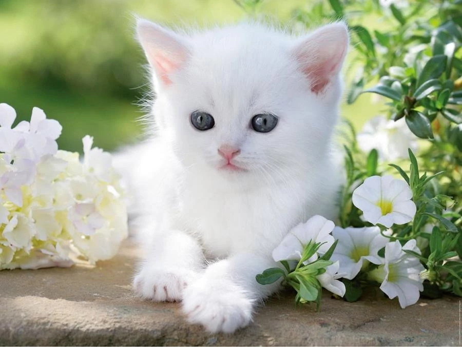

A macskás kávézóban minden egyes italunk egy kis szeretettel van megalkotva. Mi nem csak egy kávét adunk, hanem
élményt – hogy minden látogatás egy pihentető, játékos és finom pillanattá váljon. 🐾

Kávékülönlegességek
Macska Latté – 990 Ft
Tejes kávé, finom karamell szirup és egy csipetnyi vanília, díszítve macska formájú tejhabbal.
Cirmos Cappuccino – 890 Ft
Krémes, habos cappuccino, díszítve egy apró cica fejecskével, csokoládéporral.
Kávé Macskakozmózissal – 1 150 Ft
Erős, fekete kávé, egy csepp tejhabbal és egy kis csokoládésziruppal. Minden korty egy új kaland!
Purring Espresso – 650 Ft
Igazi olasz eszpresszó, ami úgy pörget fel, mint egy cicus a napfényben.
Teák
Macska Pihenő Tea – 750 Ft
Nyugtató, levendulás-hibiszkuszos tea, ami olyan puha, mint egy doromboló macska.
Zöld Tea - Cica Frissesség – 650 Ft
Frissítő zöld tea egy csipetnyi mentával és citrommal, hogy felébresztse benned a játékos cicát.
Macskaszem Teakeverék – 800 Ft
Cinkotai csipkebogyó, fanyar narancs és egy kis fahéj. Kiváló választás, ha szeretnél egy csepp varázslatot.
Frissitő Italok
Cica Smoothie – 1 100 Ft
Friss mangó, banán, egy kis chia mag és joghurt – olyan édes és lágy, mint egy kis cica pofija.
Macskakölykök Koktélja – 950 Ft
Friss gyümölcsök és narancslé egy kis szénsavval, ideális hűsítő a forró napokra.
Felpörgető Macska Juice – 850 Ft
Friss narancs, ananász és lime, hogy a napod ugyanolyan színes és energikus legyen, mint egy cicás reggel.
Különleges Kávéitalok
Nyári Macska Frappe – 1 250 Ft
Jeges kávé, tejszínhabbal, csokoládé sziruppal és egy macskás édességgel a tetején.
Chai Latte Macska Módra – 1 100 Ft
Fűszeres chai tea, tej és egy csipetnyi fahéj – kicsit olyan, mint egy macska szeretetteljes ölelése.
Macskafüves Jeges Kávé – 1 150 Ft
Jeges kávé, egy kevés menta, és egy csipetnyi macskafű – igazi élénkítő.
Édességek
Cica Keksz – 500 Ft
Kézműves, vaníliás keksz, amit a cica formája inspirált. Minden falat egy kis boldogság!
Macska Torta – 1 200 Ft
Rákóczi túrós, krémes és édes, mint egy macska dorombolása.
Tüzes Cica Brownie – 850 Ft
Csokoládés brownie, egy csipetnyi chili paprikával – játékos, mint egy macska!
Különlegességek a Nap Folytán
Macskás Latte Art Szívesség – 1 200 Ft
Kérd meg barátaidat, hogy válasszanak kedvenc cicás mintájukat, és egyedi latte artot készítünk nekik!
(Előrendelés szükséges)
Macskakávé Kóstoló – 1 800 Ft
Három különböző kávé, mindegyik egyedi ízvilággal, mindegyik cicás kiegészítővel. Az ízek titkát csak a
legbátrabbak tudhatják meg!